Знакосинтезирующие индикаторы и блоки цифровой индикации
Знакосинтезирующий индикатор — это индикатор, в котором информация отображается с помощью одного или совокупности дискретных элементов.
Блоками цифровой индикации называются части и узлы с визуально наблюдаемой цифровой информацией. Их образуют дешифраторы - специальные микросхемы, преобразующие (дешифрирующие) логическое кодовое состояние предшествующих им счетчиков импульсов в сигналы десятичной системы, и знакосинтезирующие индикаторы - электронные приборы, отображающие информацию. Один дешифратор и соответствующий ему один знакосинтезирующий индикатор образуют одноразрядный блок цифровой индикации.
Газоразрядные цифровые индикаторы
Из всего разнообразия индикаторов, отображающих логические состояния счетчиков импульсов, наибольшую популярность получили газоразрядные цифровые индикаторы, каждый элемент у которых представляет собой самостоятельную цифру, и семиэлементные индикаторы, цифры в которых образуются различным сочетанием светящих элементов-полос.
Внешний вид, цоколевка и условное графическое обозначение одного из газоразрядных индикаторов серии ИН - индикатора ИН8 - показаны на рис. 1.
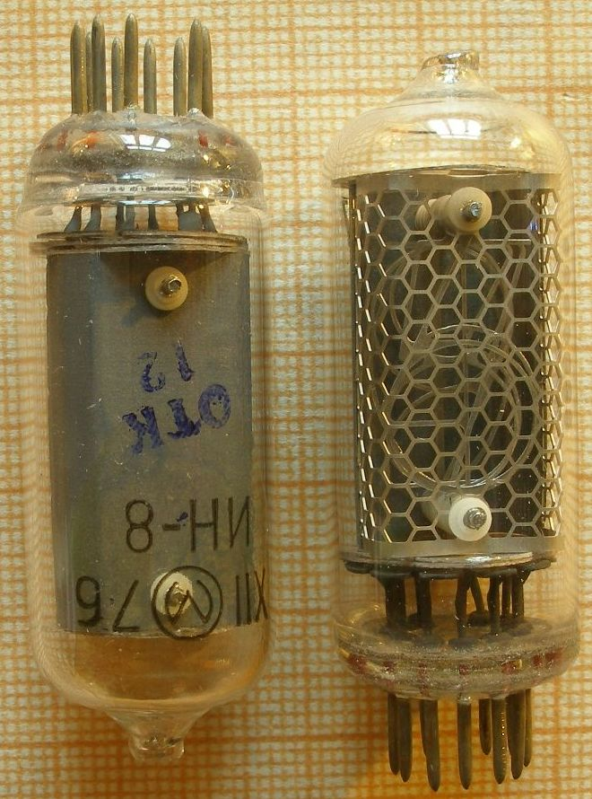
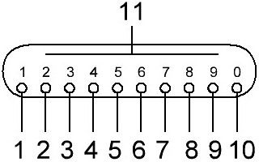
В стеклянном баллоне, наполненном неоном (наполнение обозначают черной точкой), на тонких металлических стойках размещены одна за другой (пакетом) проволочные электроды в форме цифр от 0 до 9. Эти электроды - катоды индикатора, которые обозначают на схеме небольшими кружками с выводами от них. Форму н размеры цифр делают такими, чтобы те из них. которые находятся впереди, возможно меньше перекрывали собой расположенные сзади.
Функцию анода выполняет тонкая сетка, размещенная перед пакетом цифр, через которую, хорошо видно свечение всех катодов цифр. От всех катодов и анода сделаны проволочные выводы, нумерация которых идет в направлении движения часовой стрелки (если смотреть на них со стороны дна баллона). Вариант схемного обозначения индикатора представлен на рис. 1 (справа).
Принцип действия такого индикатора следующий. На анод подают довольно большое напряжение (около 200 В) от плюсового вывода источника постоянного тока. При подключении к минусовому выводу источника одного из катодов вблизи этого катода возникает тлеющий электрический разряд, оранжево-красное свечение которого повторяет форму включенного знака цифрового индикатора.
В блоке цифровой индикации подключение катодов-цифр к общему (минусовому) проводнику источника питания устройства выполняет дешифратор.
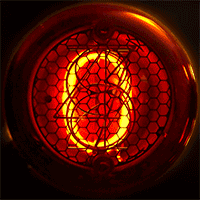
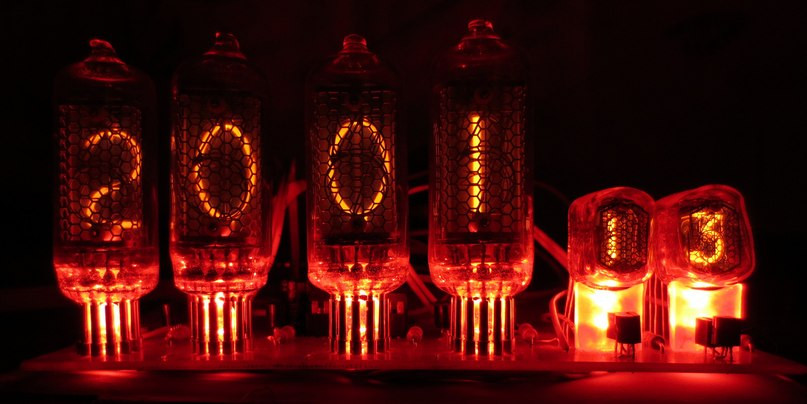
Светодиодные семисегментные индикаторы
Светодиодный семисегментный индикатор образуют семь светодиодов, имеющих форму полос, которые расположены в одной плоскости «восьмеркой» (рис. 3). Пропуская прямой ток через один или группу соответствующих светодиодов-элементов, получают светящееся изображение цифры или буквы.
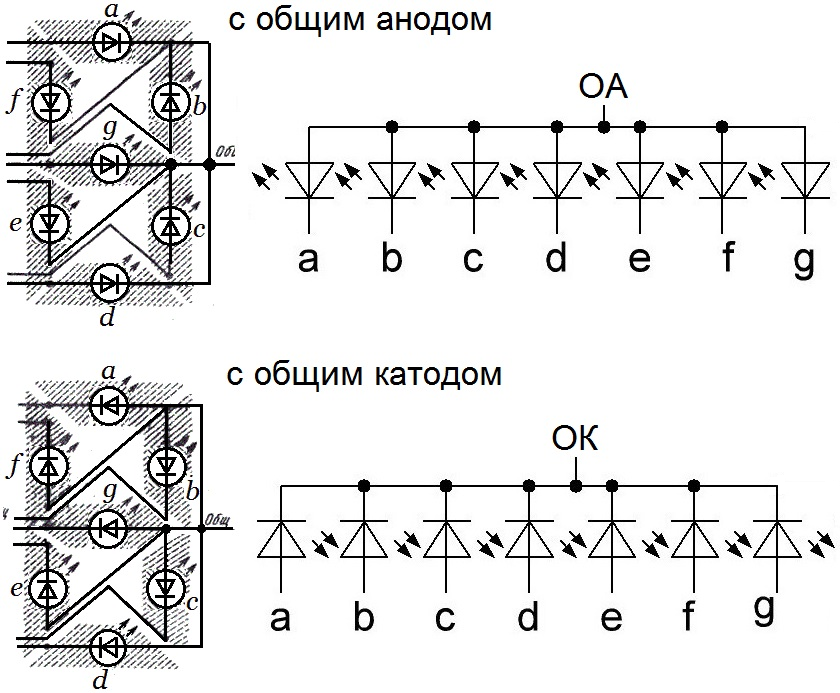
слева - с общим катодом, справа - с общим анодом
По способу соединения электродов светодиодов и полярности включения питания различают индикаторы двух групп: с общим катодом и с общим анодом. У индикаторов первой группы соединены между собой катоды всех светодиодов, а у индикаторов второй группы - аноды всех светодиодов (рис. 3). Для управления индикаторами с общим катодом на входные (анодные) выводы подают напряжение положительной полярности, а для управления индикаторами с общим анодом - отрицательной полярности по отношению к общему проводу.
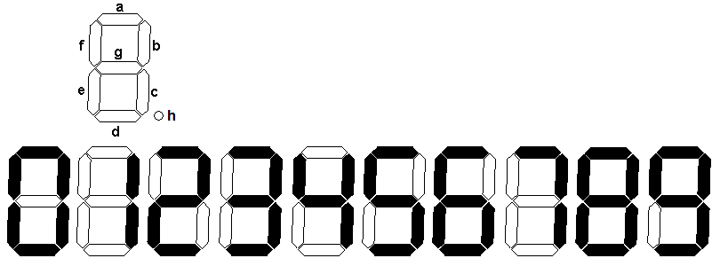
Во многих семисегментных индикаторах добавляют восьмой сегмент — точку, для того, чтобы можно было показать целое и дробное значение.
Индикация того или иного знака происходит путем гашения ненужных для данного знака элементов. Так, например, для индицирования цифры 0 гасят только элемент g, для цифры 4 - элементы a, d и е.
Семиэлементные индикаторы позволяют также индицировать некоторые прописные (заглавные) буквы русского или латинского алфавита. Для индикации буквы А, например, надо погасить элемент d, для индикации буквы Б - погасить элемент b и т. д.
Семисегментные индикаторы могут быть одиночные и многоразрядные (рис. 4), то есть две, три, четыре индикатора в одном корпусе.
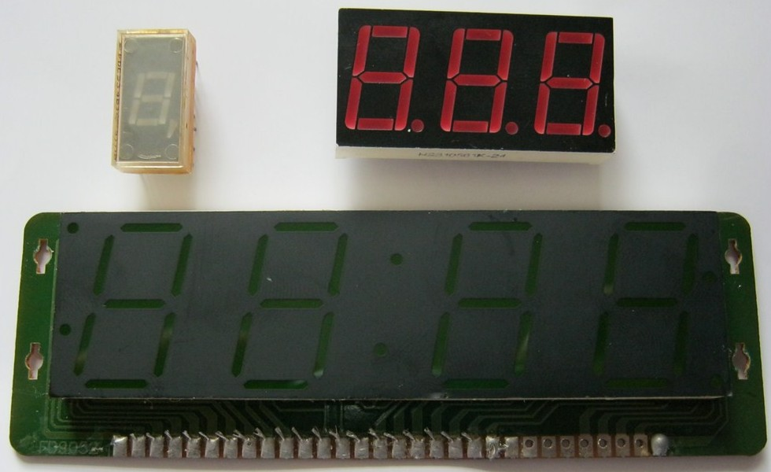
Вакуумные люминесцентные индикаторы
Внешний вид и варианты условного графического обозначения одного из вакуумных люминесцентных индикаторов серии ИВ-индикатора ИВ-6 (или ИВ-ЗА) показаны на рис. 5.
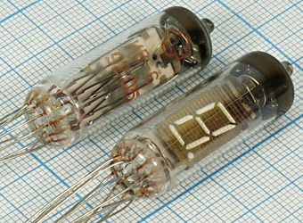
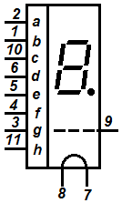
Индикатор представляет собой электронную лампу, содержащую катод - нить прямого накала, управляющую сетку, семь анодов-элементов знака, расположенных в одной плоскости, и еще один анод-разделительную точку. На нить накала (выводы 7 и 8) подают постоянное или пульсирующее напряжение 0,8...1,5 В (в зависимости от типа индикатора), на сетку (вывод 9) и аноды-элементы (выводы 1-6, 10)- постоянное напряжение 20... 25 В. Раскаленная нить накала испускает электроны, которые устремляются к положительно заряженной сетке, в большинстве своем пролетают сквозь нее и, бомбардируя аноды-элементы, заставляют светиться нанесенный на них слой люминофора.
На анод-разделительную точку (вывод 11) подают такое же, как на другие электроды индикатора, напряжение, но не через дешифратор, а от генератора импульсов. В электронных часах, например, такая точка, мигающая с частотой 1 Гц, отделяет показания минут текущего времени от показаний часов.
У индикатора ИВ-6 (или ИВ-3А) 12 гибких проволочных выводов, отсчет которых ведут по часовой стрелке (если смотреть на них снизу). Ключом для отсчета служит укороченный свободный вывод 12.
Многоразрядные вакуумные люминесцентные индикаторы
Внешний вид многоразрядного вакуумного люминесцентного индикатора ИВЛ1-7/5 показан на рис. 6. В его стеклянном корпусе размерами 130×45 мм, с шестнадцатью гибкими пластинчатыми выводами, расположены «в строку» четыре семисегментных люминесцентных индикатора - четыре разряда и две разделительные точки, образующие еще один разряд. В обозначении цифра 7 указывает на число элементов в полном разряде, а цифра 5-число разрядов. Катодом служат три нити накала, соединенные параллельно (выводы 1 и 16).
|
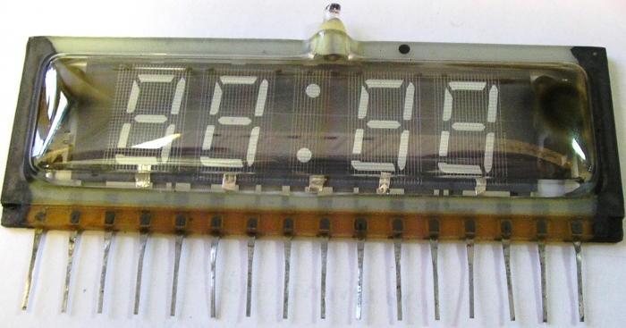 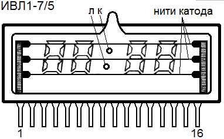 |
Номер вывода | Назначение |
|---|---|---|
| 1 | Катод | |
| 2 | к - точка | |
| 3 | Сетка 5-го разряда | |
| 4 | Элементы g | |
| 5 | Элементы f | |
| 6 | Сетка 4-го разряда | |
| 7 | Элементы e | |
| 8 | Элементы d | |
| 9 | Сетка 3-го разряда | |
| 10 | л - точка | |
| 11 | Сетка 2-го разряда | |
| 12 | Элементы c | |
| 13 | Элементы b | |
| 14 | Сетка 1-го разряда | |
| 15 | Элементы a | |
| 16 | Катод |
По принципу работы прибор подобен индикатору серии ИВ (рис. 5), но одноименные элементы индикаторов 1-го, 2-го, 4-го и 5-го разрядов соединены между собой в группы, и каждая группа имеет отдельный вывод. Сетки всех разрядов и разделительные точки К и Л 3-го разряда индикатора также имеют отдельные выводы.
Индикаторы ИВЛ1-7/5 наиболее широко используют в промышленных и любительских электронных часах. Но для управления знакосинтезирующими элементами таких или подобных им многоразрядных индикаторов требуется так называемая динамическая система индикации.
На принципиальных схемах индикатор ИВЛ 1-7/5 изображают в виде таблицы, показанной на рис. 7. Рассматривая ее, нетрудно разобраться, какой из выводов индикатора имеет отношение к тем или иным его элементам. Крайние выводы 1 и 16-выводы общего катода прямого накала, 2 и 10 - выводы разделительных точек К и Л третьего разряда, а 3, 6, 9, 11 и 14-самостоятельные выводы сеток пяти разрядов индикатора. Вывод 4 - общий вывод соединенных между собой элементов d, вывод 5 - элементов f, вывод 7-элементов и т.д.
Жидкокристаллические индикаторы
Жидкокристаллические индикаторы (ЖКИ) относятся к числу пассивных приборов, так как не излучают собственный свет, как все рассмотренные выше индикаторные приборы, а преломляют падающее или проходящее сквозь них излучение.
Жидкие кристаллы (ЖК), представляют собой органические жидкости с упорядоченным расположением молекул, характерным для кристаллов. Жидкие кристаллы прозрачны для световых лучей, но под действием электрического поля структура их нарушается, молекулы располагаются беспорядочно и жидкость становится непрозрачной.
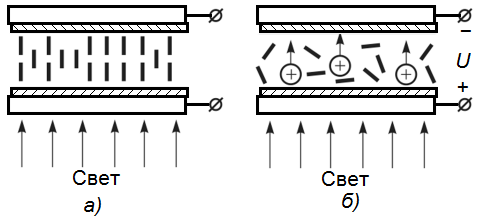
Простейший ЖК-индикатор, основанный на эффекте динамического рассеивания света (рис. 8), состоит из двух параллельных стеклянных пластин 1 с нанесенными на внутренней поверхности прозрачными электродами 2 из окиси олова или двуокиси цинка (при работе на просвет) и слоя жидкокристаллического вещества 3 между ними толщиной 10—25 мкм.
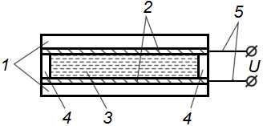
1 - стеклянные пластины, 2 - электроды, 3 - жидкокристаллическое вещество,
4 - уплотнительные прокладки, 5 - внешние выводы
По принципу действия различают:
- ЖКИ, работающие в проходящем свете (на просвет), созданном источником подсветки;
- ЖКИ, работающие в свете любого источника (искусственного или естественного), отражающемся в индикаторе (на отражение)/
Работа на просвет используется в мониторах, дисплеях сотовых телефонов. Индикаторы работающие на отражение встречаются в измерительных приборах, часах, калькуляторах, дисплеях бытовой техники и др. Ряд индикаторов используется с отключаемой подсветкой в условиях яркого освещения и с включенной подсветкой в условиях низкой освещенности, что позволяет уменьшить потребляемую мощность.
На рисунке 9 представлен ЖКИ, работающий на отражение. Между двумя прозрачными пластинками находится слой жидкого кристалла (толщина слоя 10 - 20 мкм). На верхнею пластинку нанесены прозрачные электроды, имеющие форму сегментов, цифр или букв.
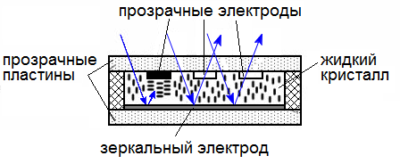
Если на электроды напряжение не подано, то ЖК прозрачен, световые лучи внешнего естественного освещения проходят через него, отражаются от нижнего зеркального электрода и выходят обратно - мы видим пустой экран. При подаче на какой-либо электрод напряжения, ЖК под этим электродом становится непрозрачным, лучи света не проходят через эту часть жидкости, и тогда на экране мы видим сегмент, цифру, букву, знак и т.п.
Жидкокристаллические индикаторы обладают целым рядом преимуществ, среди которых можно выделить очень низкое энергопотребление, долговечность, компактность.
Подробнее о жидкокристаллических индикаторах здесь.
Источники
ruselectronic.com - Семисегментный индикатор
radioskot.ru - 7-Семисегментные светодиодные индикаторы
electricalschool.info - Приборы и устройства индикации